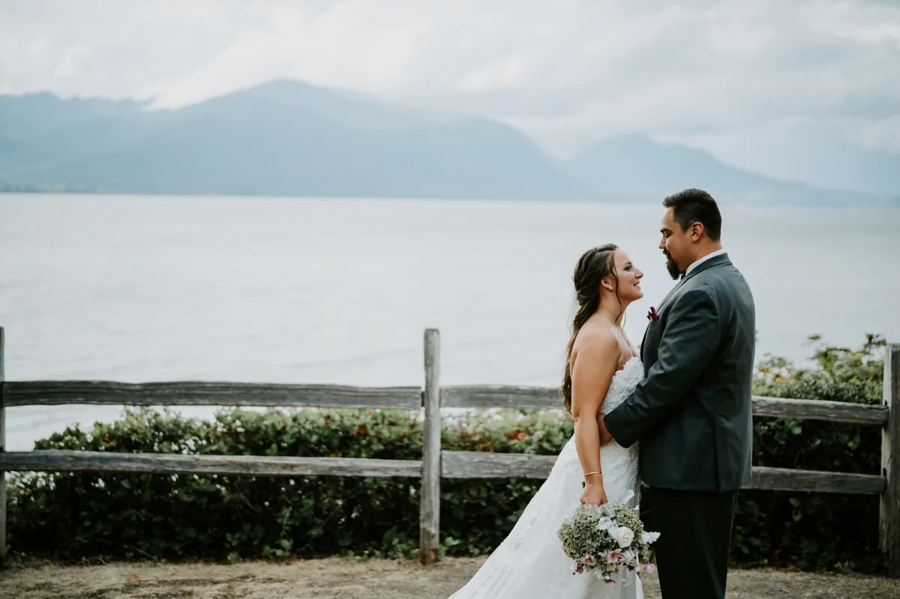

06 / The price
What a wedding photographer
costs in Seattle.
What the price pays for, what gets added to it, and four questions that make two quotes comparable.
By Alex Claudio Photography
My weddings start at $4,000. The Knot’s 2026 Real Weddings Study put the national average at $3,000 for couples who married in 2025.
The two numbers are hard to compare until you know what each one includes. A national average mixes short bookings with full days, and small towns with cities like Seattle. Here is what the price pays for, what gets added to it, and what to ask so that two quotes describe the same thing.
Part 1 of 2
What the price pays for
The hours on the day
Wedding photography is priced by the hour of coverage, and the hours move the price more than anything else. I book six, eight, or ten, and I photograph every one of them myself.
Six hours covers a focused stretch of the day. Eight reaches from the preparations into the reception. Ten suits a longer day. Six, eight, or ten hours? goes through what fits in each.
Count from the first moment you want photographed to the last, with no gaps. “Full day” can mean eight hours at one studio and twelve at another, so ask for the number.
The planning before
The price includes a consultation and help with your timeline. Before the wedding I go through the day with you: when the light is good at your venue, how long your family photographs need, and where portraits fit without keeping you from your guests.
Most timeline problems are easier to fix on paper a few months ahead than on the day. A wedding timeline with time for your guests shows how I build one.
The editing after
After the wedding I go through every frame, choose the ones to keep, and edit each of them myself. That takes longer than the wedding did, and it is part of the price.
You receive the edited photographs in high resolution in a private online gallery, with downloads and personal printing rights. Personal printing rights mean you can print them wherever you like and share them with your family, with no charge per file or per print.
When you compare quotes, look for each of these by name. Some photographers deliver a set number of files and sell the rest, and some keep the printing in-house.
The photographer you met
A larger studio may send an associate, someone you meet for the first time on the wedding day. Ask who will be holding the camera.
I have photographed every one of my weddings myself since 2014. The person you write to and plan with is the person who arrives.
Part 2 of 2
What gets added to it
Sales tax
Washington charges sales tax on wedding photography. The Department of Revenue requires event photographers to collect it on every charge, travel costs included.
In Seattle the rate is a little over ten percent, so $4,000 of photography comes to a little over $4,400. The rate depends on where you receive your photographs, whichever city the wedding is in.
Some quotes include tax and some add it afterwards. I add it in your proposal, so you see the total before you book.
Travel
A wedding away from Seattle can add travel, and photographers charge for it in different ways. Some charge by the mile past a set distance, and others quote a flat fee.
I list any travel in your proposal, so it is settled before you book. If you are marrying elsewhere in the Pacific Northwest or in Europe, tell me where and I will price it for you.
Albums, sessions, and extra hours
Three things are often added to a wedding booking: an engagement session, extra hours, and an album. I offer all three, and the $4,000 starting price includes none of them.
Watch for the album when you compare quotes. One quote with a leather album and another without it are different offers, even for the same hours.
Ask what an added hour costs before the wedding. If dinner runs late and you want the last dance photographed, you will already know the price.
Ask the same four questions
Put these to every photographer you are considering, and their quotes become comparable.
- How many consecutive hours are included, and who photographs them?
- Is sales tax in the price, and is there a travel charge for our venue?
- How many photographs do we receive, at what resolution, and with which rights to print and share them?
- What do an album, an engagement session, and an added hour each cost?
Send me your date and venue, and I will answer all four in your proposal.